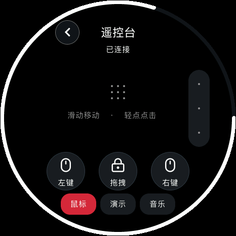
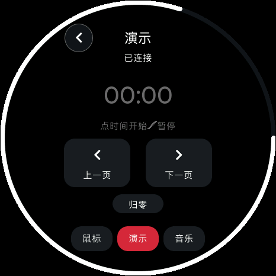
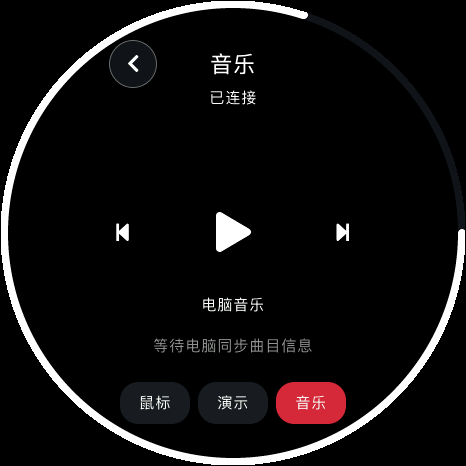

<!doctype html><html lang="zh-CN"><meta charset="utf-8"><meta name="viewport" content="width=1080"><title>电脑遥控台</title><link rel="stylesheet" href="style.css">
    <main class="poster remote" data-number="13"><header><div class="brand">soRound OS <span>明天 · 正式版见</span></div><div class="kicker">12 / 遥控台升级</div><h1>小圆屏，<br>也管点大事。</h1><p class="sub">移动鼠标、演示翻页、控制音乐，放在手边就能用。</p></header><div class="content"><div class="duo"><figure class=""><figcaption>鼠标 · 轻点 / 滚动 / 拖拽</figcaption></figure><figure class=""><figcaption>演示 · 翻页与计时</figcaption></figure></div><div class="music-row"><figure class=""><figcaption>音乐三键</figcaption></figure><div><b>上一曲<br>播放 / 暂停<br>下一曲</b><p>三键居中，留出更清楚的触摸区域。<br>长按音乐，调出音量控制。</p></div></div></div><footer><span>原生 UI 渲染 · 画面数值为示例</span><span>13 / 10.23</span></footer></main></html>